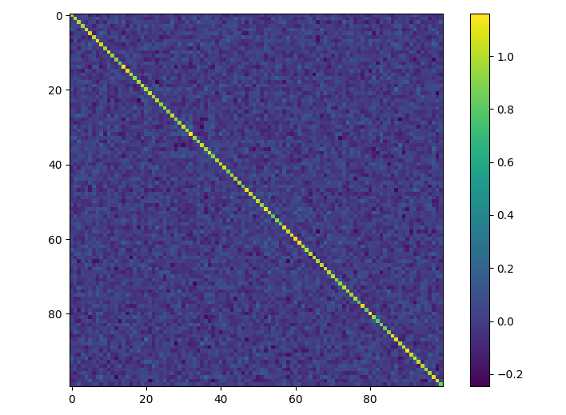

浅谈随机向量与随机矩阵
随机向量与随机矩阵有个反直觉的性质。
更新：可以看更新的文章随机矩阵正交性证明。
随机向量
假设n维空间有两个随机向量$v_1, v_2$，
其每个分量均采样自正态分布$x_i \sim N(0,\sigma^2), y_i \sim N(0, \sigma^2)$。那么其内积为，
这证明高维空间随机向量的正交性，也就是说高维空间中两个随机向量几乎是垂直的。注意到，这里的计算是一阶的，因此用不到方差$\sigma^2$。同时，$x_i,y_i$不一定采样自正态分布，其他分布也可以，只要均值为0即可。例如均匀分布，
需要注意，尽管随机向量可以在$R^n$中取，但是在全空间中均匀分布无法定义，因此如果采用分布来自均匀分布，随机向量中的元素是有范围约束的。
均值，
方差，
在均值为0，方差为$\sigma^2$时，解得$a = -b = \sqrt{3}\sigma$。例如$\sigma=\frac{1}{\sqrt{n}}$，那么有均匀分布$U[- \sqrt{3/n}, \sqrt{3/n}]$，从该分布采样的高维随机向量几乎垂直。
这个结论容易推广到随机矩阵上。
随机矩阵
随机矩阵对应的英文术语有两个，一个是random matrix，另外一个是Stochastic matrix。前者指随机初始化，后者是指马尔科夫链的transition matrix。
马尔科夫链的transition matrix为，
其满足$\displaystyle \sum_{i} P_{i,k} = 1$。我们这里提及的随机矩阵指random matrix，就是每个元素独立采样自某个概率分布。
从向量可以推广到矩阵，假设矩阵$A_{n \times n} = [a_{ij}]$，如果每个元素均采样自正态分布，
那么，
也就是说满足一定采样条件的随机矩阵几乎正交。事实上，对于$A \in R^{m \times n} , m \ge n$的矩阵也成立，即有，
这时候采样$a_{ij} \sim N(0, \frac{1}{m})$。证明思路类似于随机向量的内积，
以上推导可以发现，样本$a_{ij}$不是采样自正态分布，而是任意分布$p(x)$，其均值0，方差为$\frac{1}{m}$的随机向量也成立。
Numpy简单实验一下，
1 | import matplotlib.pyplot as plt |
可视化如下，

与单位矩阵的MSE约等于$0.00481$，这说明该矩阵和单位矩阵非常接近。
为什么会这样？其实随机矩阵的转置自乘，其实就是一系列随机向量的内积，它包括两类：
- 两个不相等的随机向量的内积，前面已经证明过，两个不相等的随机向量的内积几乎为0
- 两个相等的随机向量的内积，即模长
两个相等的随机向量的内积结果如何呢？下面计算，容易计算模长，
这里获得归一性证明。注意到，这个推导不要求随机矩阵的元素采样自正态分布，只要均值为0，方差为$\frac{1}{n}$即可。那么，对于均匀分布，只需要采样自$U[- \sqrt{3/n}, \sqrt{3/n}]$即可满足随机矩阵$n\times n$正交。
Python实现，
1 | # 随机矩阵正交-均匀分布 |
绘图可视化一下，
补充
这篇文章的思路不是很清晰，可以看新文章随机矩阵正交性证明。
总结
高维随机向量几乎正交，只要采样自均值为0的概率分布即可。
转载请包括本文地址：https://allenwind.github.io/blog/7828
更多文章请参考：https://allenwind.github.io/blog/archives/